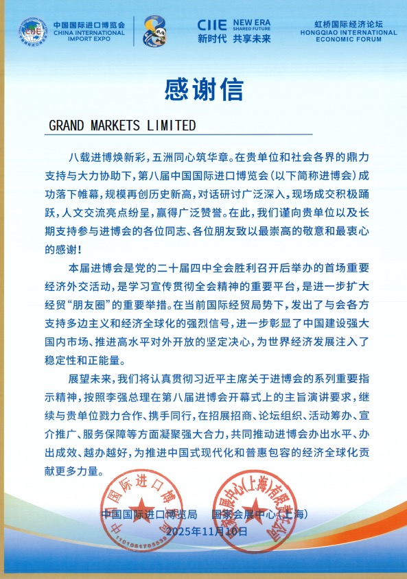
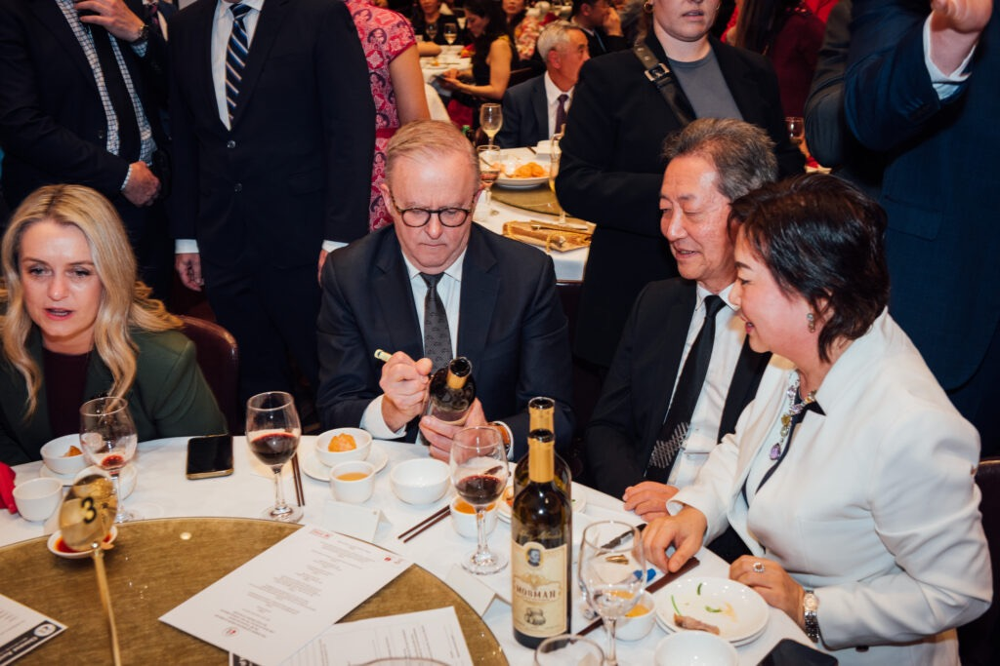

Public eventsSelected records
Events & Honors
Public events, collaboration milestones, and visual records
Explore selected public events, ecosystem collaborations, and education-related milestones from the GMA network.
CollaborationsEcosystem activity
GalleryImage archive
Highlights
Selected milestones
This page records public-facing activities and education-related milestones. It is not intended to imply any financial outcome, product endorsement, or regulatory status.
International finance event recognition
2025 · Wiki Finance Expo Hong Kong · Sky100

China International Import Expo thank-you letter
2025 Q4 · CIIE · Brand communication
Brand communication signing event
Grand Markets Capital · Public media collaboration

Australian Prime Minister charity dinner
Signed wine item · Charity contribution
Context
How to read this page
Public participation
Event records show selected public activities, venues, and visual moments connected with education, brand communication, or ecosystem engagement.
Visual archive
Images are included to provide context for past activities. They should be read as historical records rather than performance claims.
Ecosystem references
Where organizations are mentioned, the purpose is to describe public collaboration context, not to imply advice or product endorsement.
Education-first framing
The page remains within a general-education and public-information scope, consistent with the rest of the Academy website.
Gallery
Event image archive

Updates
What future updates may include
Education activities
Public workshops, course briefings, and learning-resource updates may be added when suitable records are available.
Brand records
Milestones may include event participation, visual archives, and public-facing communication moments.
Follow-up channels
Community notices can help learners follow future public events and Academy content updates.
Community
Follow future events and learning updates
Join the community for public event notices, course updates, and education resources.
Join community